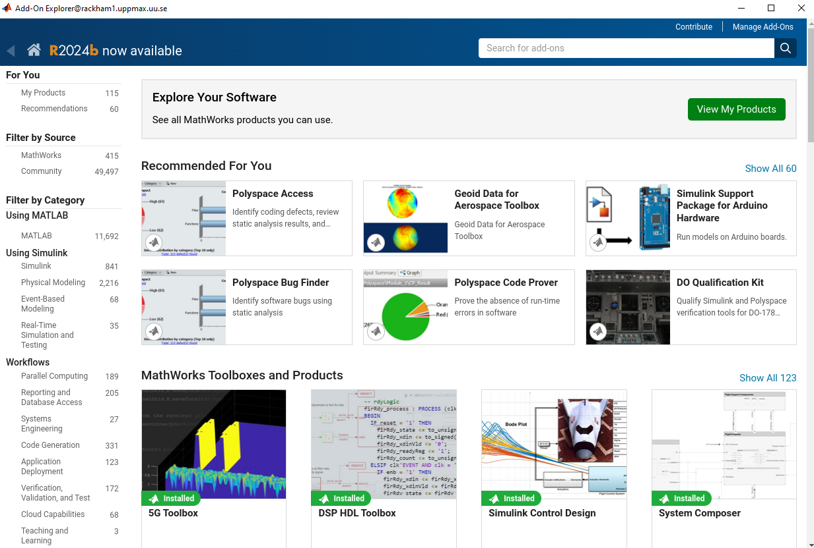
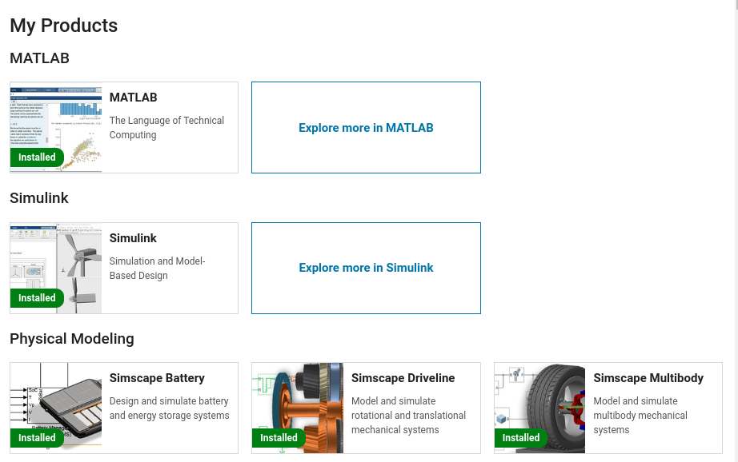

Add-Ons¶
Add-ons extend the capabilities of MATLAB® by providing additional functionality for specific tasks and applications, such as:
- connecting to hardware devices
- additional algorithms
- interactive apps
Encompass a wide variety of resources
- products
- apps
- toolboxes
- support packages
Available from:
- MathWorks®
- the global MATLAB user community
For more information about Add-Ons, Mathworks.
Objectives
- Navigate to toolboxes and Add-Ons
- View Add-Ons and toolboxes
- Install and use Add-Ons
Before going into installing Add-Ons, let’s have a background to the MATLAB environments and ecosystem!
Want a video?
MATLAB Add-Ons manager¶
In the GUI, the Add-Ons manager can be selected from the menu at the top. The drop-down menu options allow users to:
- Browse a library of Add-Ons to download. Note that some Add-Ons require a separate license.
What does that look like?

- Manage Add-Ons already downloaded.
What does that look like?

-
Package user-generated code as a Toolbox or App
-
Get hardware-related support packages
Here we will only focus on the first two options.
Important
Note that very many packages are already included in the Academic installation and license. You can go to the Add-On explorer and select “View My Products” to see what is available.

See also
Some typical toolboxes include:
- Parallel Computing
- Simulink
- Symbolic Math
- Signal Processing
- Machine Learning
Some toolboxes provide a GUI for their tools/Apps
We won’t cover the usage of most toolboxes here!
Tip
Check which toolboxes are installed by the MATLAB command ver at a MATLAB prompt.
Example output from Pelle
>> ver
---------------------------------------------------------------------------------------------------------------
MATLAB Version: 24.1.0.2689473 (R2024a) Update 6
MATLAB License Number: 863987
Operating System: Linux 5.14.0-570.42.2.el9_6.x86_64 #1 SMP PREEMPT_DYNAMIC Sun Sep 14 13:59:34 UTC 2025 x86_64
Java Version: Java 1.8.0_202-b08 with Oracle Corporation Java HotSpot(TM) 64-Bit Server VM mixed mode
---------------------------------------------------------------------------------------------------------------
MATLAB Version 24.1 (R2024a)
Simulink Version 24.1 (R2024a)
5G Toolbox Version 24.1 (R2024a)
AUTOSAR Blockset Version 24.1 (R2024a)
Aerospace Blockset Version 24.1 (R2024a)
Aerospace Toolbox Version 24.1 (R2024a)
Antenna Toolbox Version 24.1 (R2024a)
Audio Toolbox Version 24.1 (R2024a)
Automated Driving Toolbox Version 24.1 (R2024a)
Bioinformatics Toolbox Version 24.1 (R2024a)
Bluetooth Toolbox Version 24.1 (R2024a)
C2000 Microcontroller Blockset Version 24.1 (R2024a)
Communications Toolbox Version 24.1 (R2024a)
Computer Vision Toolbox Version 24.1 (R2024a)
Control System Toolbox Version 24.1 (R2024a)
Curve Fitting Toolbox Version 24.1 (R2024a)
DDS Blockset Version 24.1 (R2024a)
DSP HDL Toolbox Version 24.1 (R2024a)
DSP System Toolbox Version 24.1 (R2024a)
Database Toolbox Version 24.1 (R2024a)
Datafeed Toolbox Version 24.1 (R2024a)
Deep Learning Toolbox Version 24.1 (R2024a)
Econometrics Toolbox Version 24.1 (R2024a)
Embedded Coder Version 24.1 (R2024a)
Filter Design HDL Coder Version 24.1 (R2024a)
Financial Instruments Toolbox Version 24.1 (R2024a)
Financial Toolbox Version 24.1 (R2024a)
Fixed-Point Designer Version 24.1 (R2024a)
Fuzzy Logic Toolbox Version 24.1 (R2024a)
GPU Coder Version 24.1 (R2024a)
Global Optimization Toolbox Version 24.1 (R2024a)
HDL Coder Version 24.1 (R2024a)
HDL Verifier Version 24.1 (R2024a)
Image Acquisition Toolbox Version 24.1 (R2024a)
Image Processing Toolbox Version 24.1 (R2024a)
Industrial Communication Toolbox Version 24.1 (R2024a)
Instrument Control Toolbox Version 24.1 (R2024a)
LTE Toolbox Version 24.1 (R2024a)
Lidar Toolbox Version 24.1 (R2024a)
MATLAB Coder Version 24.1 (R2024a)
MATLAB Parallel Server Version 24.1 (R2024a)
MATLAB Report Generator Version 24.1 (R2024a)
MATLAB Test Version 24.1 (R2024a)
Mapping Toolbox Version 24.1 (R2024a)
Medical Imaging Toolbox Version 24.1 (R2024a)
Mixed-Signal Blockset Version 24.1 (R2024a)
Model Predictive Control Toolbox Version 24.1 (R2024a)
...
Install Add-Ons¶
- Search in Add-Ons explorer and install.

- Installation goes in local folder,
~/MATLAB Add-Ons, and should be accessible wherever you are in the file tree. - It’s in the path so it should be possible to run directly if you don’t need to run an installation file.
- For more information about a specific support package install location, see the documentation for the package.
Warning
To be able to install you need to use the email for a personal mathworks account.
You can install some Add-Ons manually using an installation file. This is useful in several situations:
- The add-on is not available for installation through the Add-On Explorer, for example, if you create a custom add-on yourself or receive one from someone else.
- You downloaded the add-on from the Add-On Explorer without installing it.
- You downloaded the add-on from the File Exchange at MATLAB Central™.
Bianca
- One way to get a MATLAB package to Bianca is to download it on your working computer without installing it.
- Then you use the wharf to get the (tared) file(s) on Bianca.
- Then move it to the
~/MATLAB Add-Onsfolder on Bianca.
See also
Demo
- Search for
kalmanf - Click “Learning the Kalman Filter”
- Look at the documentation
- Test if the command works today:
- OK, it is not there
- Click “Add”, and “Download and Add to path”
- Type email address connected to your MathWorks account (not needed for some versions at Dardel)
- Installation starts
- It will end up in the
~/MATLAB\ Add-Ons/folder - This is how the file tree looked for me (
treecommand is available at some centres)
$ tree MATLAB\ Add-Ons/
MATLAB\ Add-Ons/
└── Collections
| └── Efficient\ GRIB1\ data\ reader
| ├── core.28328
| ├── license.txt
| ├── readGRIB1.c
| ├── readGRIB1.mexa64
| └── resources
| ├── addons_core.xml
| ├── matlab_path_entries.xml
| ├── metadata.xml
| ├── previewImage.png
| ├── readGRIB1.zip
| └── screenshot.png
└── Functions
└── Learning\ the\ Kalman\ Filter
├── kalmanf.m
└── resources
├── addons_core.xml
├── kalmanf.zip
├── matlab_path_entries.xml
├── metadata.xml
├── previewImage.png
└── screenshot.png
- Evidently it is a
function. Note that I already have something classified ascollections - Now test:
- OK. It is installed but may need some other things. Just an example!
Exercises¶
 Exercise
Exercise
Find what Toolboxes are available in MATLAB at your place.
 Exercise
Exercise
Find the kalmanf add-on, install it, and run a test command. Use the Demo as instruction.
 Exercise
Exercise
Browse the add-ons and get inspired for your own work. Use the Demo as inspiration.
Summary
- Many Add-Ons, like toolboxes and packages are available at the Clusters
- You can view Add-Ons and toolboxes with the Add-on manager
- It is all more or less graphical
- Use Add-Ons explorer to find and install add-ons/toolboxes.
- Add-ons installed by you can be found in
~/MATLAB\ Add-Ons/, and folder is automatically added to the MATLAB PATH, so it should be found no matter which working directory you are working in.